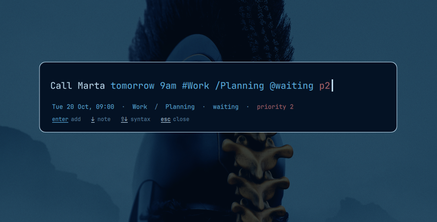

Press a key, type a sentence, press Enter. Date, project, section, label and priority are read out of it.

❯ quick-task add "Call Marta tomorrow 9am #Work @waiting p2" Added: Call Marta (8401726593) date: tomorrow 9am -> Wed 21 Oct, 09:00 project: #Work label: @waiting priority: p2